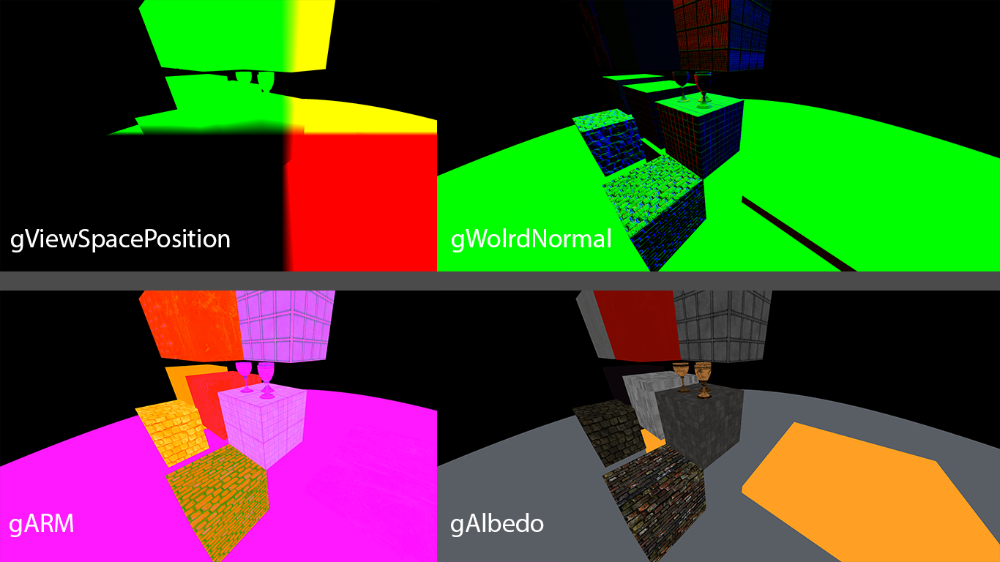
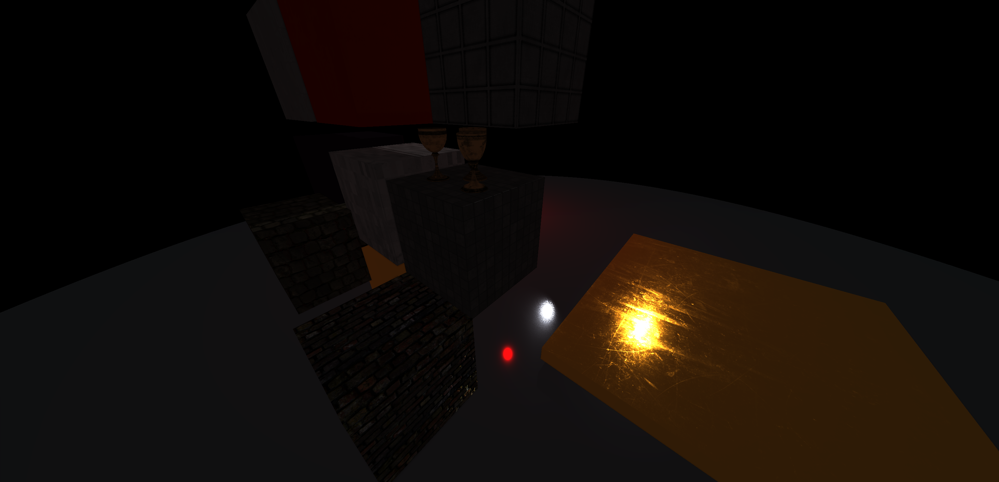
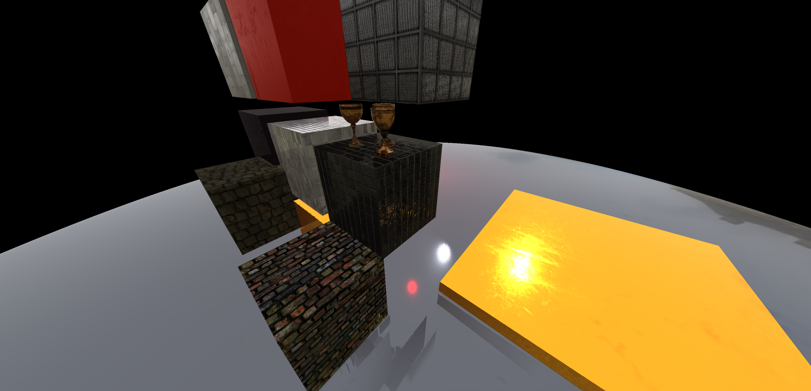
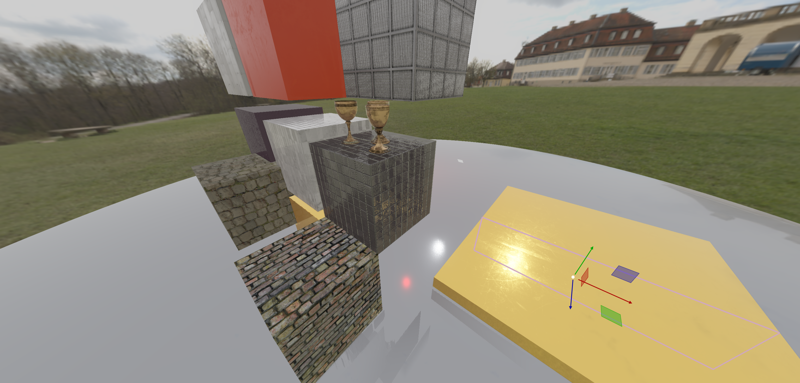

Deferred Rendering
Now that we have a way to create a render pipeline, it's time to put the render pass system to the test with a deferred renderer. But first...
What is deferred rendering?
I won't go in to too much detail, but I'll give an overview of deferred rendering in relation to forward rendering. If you don't know, forward rendering is the process of rendering meshes in sequence and running a full lighting shader for each mesh. Deferred rendering is different in that, when you render the individual meshes, you don't run the lighting shader. Instead, you use a shader built to write values to the "geometry buffer" or "g buffer". These values are usually things like surface normals, positions, material information, etc. After rendering all of the meshes, you run the full lighting shader as a screen space pass, rendering a single quad to the screen. This shader takes the g-buffer textures as input to perform per-pixel lighting calculations.
There is a performance benefit when doing this due to the fact that we don't waste any time performing lighting calculations on pixels that do not contribute to the final image due to being occluded by other meshes. This allows us to budget for a much higher light count in a scene. As well as this, you can also use the g-buffer textures to add other screen space passes such as screen space ambient occlusion and screen space reflections. In terms of performance, you can go even deeper with deferred rendering to further optimise which lights should contribute to certain pixels through a process called light culling.
One drawback, however, is the fact that using deferred rendering will actually limit how flexible your material system can be. With the forward renderer in Paul Engine, you can attach any material to an entity and its mesh will be drawn with that materials shader. This shader can be any of the default shaders or something completely custom with a unqiue lighting model or art style. This works because all of the lighting is self contained and everything you need is inside of that custom material, which is associated with the entity. With deferred rendering, the lighting calculations are dependent on the g-buffer which was populated by the geometry pass. How can we accomdate for every possible custom lighting model or set of material inputs? Should we add a g-buffer attachment for every obscure texture type that someone might use in their own lighting function? Where do we draw the line? Furthermore, the lighting is all done in a single draw call. There is no swapping to other shaders to shade specific pixels of the screen and there is no rebinding of material data between meshes.
The simplest way to solve this problem is to limit the type of materials that can be used in deferred rendering. We define a lighting pass shader that includes a few lighting models and a g-buffer that can provide inputs for any of the possible lighting models. Then, we add an additional forward render pass for everything that couldn't be covered in the deferred render.
Another possibility is to allow custom lighting models by pushing lighting functions into the lighting pass shader (or just allowing direct access to edit the shader).
In this example, I will be keeping it simple by setting up a deferred renderer in which all light sources contribute to all pixels. There will be two supported lighting models: Blinn-Phong and a PBR model using Cook-Torrance BRDF. This is also just a prototype and uses experimental render pass logic built for functionality over performance in their current state.
Setting up our resources
The first thing we need to do is set up our g-buffer framebuffer and all of the attachments we will be writing to:
glm::ivec2 viewportRes = { (glm::ivec2)m_ViewportSize };
FramebufferSpecification gBufferSpec;
gBufferSpec.Width = viewportRes.x;
gBufferSpec.Height = viewportRes.y;
gBufferSpec.Samples = 1;
// position
TextureSpecification positionSpec;
positionSpec.Width = viewportRes.x;
positionSpec.Height = viewportRes.y;
positionSpec.GenerateMips = true;
positionSpec.Format = ImageFormat::RGB32F;
positionSpec.MinFilter = ImageMinFilter::NEAREST;
positionSpec.MagFilter = ImageMagFilter::NEAREST;
positionSpec.Wrap_S = ImageWrap::CLAMP_TO_BORDER;
positionSpec.Wrap_T = ImageWrap::CLAMP_TO_BORDER;
positionSpec.Wrap_R = ImageWrap::CLAMP_TO_BORDER;
positionSpec.Border = glm::vec4(0.0f, 0.0f, 0.0f, 1.0f);
Ref<Texture2D> gViewPositionTexture = AssetManager::CreateAsset<Texture2D>(true, positionSpec);
out_Framerenderer->AddRenderResource<RenderComponentTexture>("gViewPosition", false, gViewPositionTexture->Handle);
Ref<FramebufferTexture2DAttachment> positionAttachment = FramebufferTexture2DAttachment::Create(FramebufferAttachmentPoint::Colour0, gViewPositionTexture->Handle);
As you can see, we first define a texture specification for the view space position buffer. Following this, we define the rest of the attachments that can be seen below:
// normal
// ...
Ref<Texture2D> gNormalTexture = AssetManager::CreateAsset<Texture2D>(true, normalSpec);
out_Framerenderer->AddRenderResource<RenderComponentTexture>("gNormal", false, gNormalTexture->Handle);
// ...
// albedo
// ...
Ref<Texture2D> gAlbedoTexture = AssetManager::CreateAsset<Texture2D>(true, albedoSpec);
out_Framerenderer->AddRenderResource<RenderComponentTexture>("gAlbedo", false, gAlbedoTexture->Handle);
// ...
// specular
// ...
Ref<Texture2D> gSpecularTexture = AssetManager::CreateAsset<Texture2D>(true, specularSpec);
out_Framerenderer->AddRenderResource<RenderComponentTexture>("gSpecular", false, gSpecularTexture->Handle);
// ...
// arm (ambient occlusion, roughness, metalness)
// ...
Ref<Texture2D> gARMTexture = AssetManager::CreateAsset<Texture2D>(true, armSpec);
out_Framerenderer->AddRenderResource<RenderComponentTexture>("gARM", false, gARMTexture->Handle);
// ...
// emission
// ...
Ref<Texture2D> gEmissionTexture = AssetManager::CreateAsset<Texture2D>(true, emissionSpec);
out_Framerenderer->AddRenderResource<RenderComponentTexture>("gEmission", false, gEmissionTexture->Handle);
// ...
// metadata (entityID, lightingModel)
// ...
metadataSpec.Format = ImageFormat::RG32F;
Ref<Texture2D> gMetadataTexture = AssetManager::CreateAsset<Texture2D>(true, metadataSpec);
out_Framerenderer->AddRenderResource<RenderComponentTexture>("gMetadata", false, gMetadataTexture->Handle);
// ...
// depth
// ...
depthSpec.Format = ImageFormat::Depth24Stencil8;
Ref<FramebufferTexture2DAttachment> depthAttach = FramebufferTexture2DAttachment::Create(FramebufferAttachmentPoint::DepthStencil, depthSpec, true);
Finally, we create the geometry framebuffer:
Ref<Framebuffer> gBuffer = Framebuffer::Create(gBufferSpec, { positionAttachment, normalAttachment, albedoAttachment, specularAttachment, armAttachment, emissionAttachment, metadataAttachment }, depthAttach);
out_Framerenderer->AddRenderResource<RenderComponentFramebuffer>("gBuffer", false, gBuffer);
The next section calls existing functions for setting up some more resources. These resources are identical to the ones found in the original forward renderer, so they can be re-used here:
Ref<Framebuffer> mainFramebuffer = InitMainFramebuffer(out_Framerenderer);
std::vector<Ref<Framebuffer>> dirSpotPointShadowFBOs = InitShadowMapping(out_Framerenderer);
InitEditorData(out_Framerenderer);
Ref<Framebuffer> bloomFBO = InitBloom(out_Framerenderer);
InitTonemapping(out_Framerenderer);
InitEnvMapAndSkybox(out_Framerenderer);
If you'd like to take a look at these functions, expand any of the following headers:
InitMainFramebuffer()
Creates the main rendering framebuffer that will be used to display the main viewport. Includes an alternate screen attachment which allows this framebuffer to be used as a ping-pong framebuffer.
glm::ivec2 viewportRes = { (glm::ivec2)m_ViewportSize };
out_Framerenderer->AddRenderResource<RenderComponentPrimitiveType<glm::ivec2>>("ViewportResolution", false, viewportRes);
FramebufferSpecification spec;
spec.Width = viewportRes.x;
spec.Height = viewportRes.y;
spec.Samples = 1;
TextureSpecification screenSpec;
screenSpec.Width = viewportRes.x;
screenSpec.Height = viewportRes.y;
screenSpec.GenerateMips = false;
screenSpec.Format = ImageFormat::RGBA16F;
screenSpec.MinFilter = ImageMinFilter::NEAREST;
screenSpec.MagFilter = ImageMagFilter::NEAREST;
screenSpec.Wrap_S = ImageWrap::CLAMP_TO_BORDER;
screenSpec.Wrap_T = ImageWrap::CLAMP_TO_BORDER;
screenSpec.Wrap_R = ImageWrap::CLAMP_TO_BORDER;
screenSpec.Border = glm::vec4(0.0f, 0.0f, 0.0f, 1.0f);
Ref<Texture2D> screenTexture = AssetManager::CreateAsset<Texture2D>(true, screenSpec);
Ref<Texture2D> alternateScreenTexture = AssetManager::CreateAsset<Texture2D>(true, screenSpec);
out_Framerenderer->AddRenderResource<RenderComponentTexture>("ScreenTexture", false, screenTexture->Handle);
out_Framerenderer->AddRenderResource<RenderComponentTexture>("AlternateScreenTexture", false, alternateScreenTexture->Handle);
Ref<FramebufferTexture2DAttachment> screenAttachment = FramebufferTexture2DAttachment::Create(FramebufferAttachmentPoint::Colour0, screenTexture->Handle);
screenSpec.Format = ImageFormat::RED_INTEGER;
Ref<FramebufferTexture2DAttachment> entityIDAttach = FramebufferTexture2DAttachment::Create(FramebufferAttachmentPoint::Colour1, screenSpec, true);
screenSpec.Format = ImageFormat::Depth24Stencil8;
Ref<FramebufferTexture2DAttachment> depthAttach = FramebufferTexture2DAttachment::Create(FramebufferAttachmentPoint::DepthStencil, screenSpec, true);
Ref<Framebuffer> mainFramebuffer = Framebuffer::Create(spec, { screenAttachment, entityIDAttach }, depthAttach);
out_Framerenderer->AddRenderResource<RenderComponentFramebuffer>("MainFramebuffer", false, mainFramebuffer);
return mainFramebuffer;
InitShadowMapping()
Create shadow map arrays for directional, point and spot light sources as well as importing the appropriate shader files and creating shadow framebuffers.
Ref<EditorAssetManager> assetManager = Project::GetActive()->GetEditorAssetManager();
std::filesystem::path engineAssetsRelativeToProjectAssets = std::filesystem::path("assets").lexically_relative(Project::GetAssetDirectory());
TextureSpecification depthSpec;
depthSpec.Border = glm::vec4(1.0f);
depthSpec.Width = m_ShadowWidth;
depthSpec.Height = m_ShadowHeight;
depthSpec.MinFilter = ImageMinFilter::NEAREST;
depthSpec.MagFilter = ImageMagFilter::NEAREST;
depthSpec.Wrap_S = ImageWrap::CLAMP_TO_BORDER;
depthSpec.Wrap_T = ImageWrap::CLAMP_TO_BORDER;
depthSpec.Wrap_R = ImageWrap::CLAMP_TO_BORDER;
depthSpec.Format = ImageFormat::Depth32;
Ref<Texture2DArray> dirLightShadowArray = AssetManager::CreateAsset<Texture2DArray>(true, depthSpec, std::vector<Buffer>(Renderer::MAX_ACTIVE_DIR_LIGHTS));
Ref<Texture2DArray> spotLightShadowArray = AssetManager::CreateAsset<Texture2DArray>(true, depthSpec, std::vector<Buffer>(Renderer::MAX_ACTIVE_SPOT_LIGHTS));
Ref<TextureCubemapArray> pointLightShadowArray = AssetManager::CreateAsset<TextureCubemapArray>(true, depthSpec, std::vector<std::vector<Buffer>>(Renderer::MAX_ACTIVE_SPOT_LIGHTS, std::vector<Buffer>(6)));
out_Framerenderer->AddRenderResource<RenderComponentTexture>("DirLightShadowMap", false, dirLightShadowArray->Handle);
out_Framerenderer->AddRenderResource<RenderComponentTexture>("SpotLightShadowMap", false, spotLightShadowArray->Handle);
out_Framerenderer->AddRenderResource<RenderComponentTexture>("PointLightShadowMap", false, pointLightShadowArray->Handle);
// In the future, this should be serialized. But many of the existing resources such as shadow framebuffers and textures aren't suited for this value to change during runtime
glm::ivec2 shadowRes = { m_ShadowWidth, m_ShadowHeight };
out_Framerenderer->AddRenderResource<RenderComponentPrimitiveType<glm::ivec2>>("ShadowResolution", false, shadowRes);
// Framebuffers
FramebufferSpecification shadowFBOSpec;
shadowFBOSpec.Width = m_ShadowWidth;
shadowFBOSpec.Height = m_ShadowHeight;
shadowFBOSpec.Samples = 1;
Ref<FramebufferTexture2DArrayAttachment> dirLightShadowDepthArrayAttach = FramebufferTexture2DArrayAttachment::Create(FramebufferAttachmentPoint::Depth, dirLightShadowArray->Handle);
Ref<Framebuffer> dirLightShadowsFramebuffer = Framebuffer::Create(shadowFBOSpec, {}, dirLightShadowDepthArrayAttach);
Ref<FramebufferTexture2DArrayAttachment> spotLightShadowDepthArrayAttach = FramebufferTexture2DArrayAttachment::Create(FramebufferAttachmentPoint::Depth, spotLightShadowArray->Handle);
Ref<Framebuffer> spotLightShadowsFramebuffer = Framebuffer::Create(shadowFBOSpec, {}, spotLightShadowDepthArrayAttach);
Ref<FramebufferTextureCubemapArrayAttachment> pointLightShadowDepthAttach = FramebufferTextureCubemapArrayAttachment::Create(FramebufferAttachmentPoint::Depth, pointLightShadowArray->Handle);
Ref<Framebuffer> pointLightShadowsFramebuffer = Framebuffer::Create(shadowFBOSpec, {}, pointLightShadowDepthAttach);
out_Framerenderer->AddRenderResource<RenderComponentFramebuffer>("DirLightFramebuffer", false, dirLightShadowsFramebuffer);
out_Framerenderer->AddRenderResource<RenderComponentFramebuffer>("SpotLightFramebuffer", false, spotLightShadowsFramebuffer);
out_Framerenderer->AddRenderResource<RenderComponentFramebuffer>("PointLightFramebuffer", false, pointLightShadowsFramebuffer);
AssetHandle shadowmapShaderHandle = assetManager->ImportAssetFromFile(engineAssetsRelativeToProjectAssets / "shaders/DepthShader.glsl", true);
Ref<Material> shadowmapMaterial = AssetManager::CreateAsset<Material>(true, shadowmapShaderHandle);
AssetHandle shadowmapCubeShaderHandle = assetManager->ImportAssetFromFile(engineAssetsRelativeToProjectAssets / "shaders/DepthShaderCube.glsl", true);
Ref<Material> shadowmapCubeMaterial = AssetManager::CreateAsset<Material>(true, shadowmapCubeShaderHandle);
out_Framerenderer->AddRenderResource<RenderComponentMaterial>("ShadowmapMaterial", false, shadowmapMaterial->Handle);
out_Framerenderer->AddRenderResource<RenderComponentMaterial>("ShadowmapCubeMaterial", false, shadowmapCubeMaterial->Handle);
return { dirLightShadowsFramebuffer, spotLightShadowsFramebuffer, pointLightShadowsFramebuffer };
InitEditorData()
Create a few values related to the debug views in the editor. Note how most of these are serialized, allowing them to be changed in the editor.
bool showColliders = true;
out_Framerenderer->AddRenderResource<RenderComponentPrimitiveType<bool>>("ShowColliders", true, showColliders);
out_Framerenderer->AddRenderResource<RenderComponentPrimitiveType<Entity>>("SelectedEntity", false, Entity());
out_Framerenderer->AddRenderResource<RenderComponentPrimitiveType<float>>("OutlineThickness", true, m_EntityOutlineThickness);
out_Framerenderer->AddRenderResource<RenderComponentPrimitiveType<glm::vec4>>("OutlineColour", true, m_EntityOutlineColour);
InitBloom()
Create all of the resources needed for the mip chain bloom render passes. Earlier in this post I mentioned how custom data types can be used in RenderComponentPrimitiveType templates and cited an example as the BloomMipChain type. This is where that example is used. The mip chain data type was intended to just be a quick and easy way to keep all of the textures together and how they should be sized.
struct BloomMipChain
{
void Init(const glm::ivec2 viewportSize, const uint8_t chainLength = 6)
{
TextureSpecification mipSpec;
mipSpec.Format = ImageFormat::R11FG11FB10F;
mipSpec.MinFilter = ImageMinFilter::LINEAR;
mipSpec.MagFilter = ImageMagFilter::LINEAR;
mipSpec.Wrap_S = ImageWrap::CLAMP_TO_EDGE;
mipSpec.Wrap_T = ImageWrap::CLAMP_TO_EDGE;
mipSpec.GenerateMips = false;
m_Chain.clear();
m_Chain.reserve(chainLength);
glm::vec2 mipSize = viewportSize;
for (uint8_t i = 0; i < chainLength; i++)
{
mipSize *= 0.5f;
mipSize = glm::max(mipSize, glm::vec2(1.0f, 1.0f));
mipSpec.Width = (uint32_t)mipSize.x;
mipSpec.Height = (uint32_t)mipSize.y;
Ref<Texture2D> texture = AssetManager::CreateAsset<Texture2D>(true, mipSpec);
m_Chain.push_back(texture->Handle);
}
}
void Resize(const glm::ivec2 viewportSize)
{
glm::vec2 mipSize = viewportSize;
for (uint8_t i = 0; i < m_Chain.size(); i++)
{
mipSize *= 0.5f;
mipSize = glm::max(mipSize, glm::vec2(1.0f, 1.0f));
AssetManager::GetAsset<Texture2D>(m_Chain[i])->Resize(mipSize.x, mipSize.y);
}
}
size_t Size() const { return m_Chain.size(); }
Ref<Texture2D> GetMipLevel(uint8_t mip) {
PE_CORE_ASSERT(mip < m_Chain.size(), "Index out of bounds. Index: {0}, Size: {1}", mip, m_Chain.size());
return AssetManager::GetAsset<Texture2D>(m_Chain[mip]);
}
AssetHandle GetMipHandle(uint8_t mip) {
PE_CORE_ASSERT(mip < m_Chain.size(), "Index out of bounds. Index: {0}, Size: {1}", mip, m_Chain.size());
return m_Chain[mip];
}
private:
std::vector<AssetHandle> m_Chain;
};
The reason the BloomMipChain doesn't use a single texture with actual mipmaps is simply because mipmap generation wasn't actually set up yet in the engine. If I had to guess, writing to mipmaps would probably be more efficient in comparison to fetching and writing to completely unique textures representing different mip levels. This is because, on the CPU side, it requires multiple calls into the asset manager to get texture assets for each mip. And, on the GPU side, I would imagine that the efficiency of the allocated memory would be better when using mips instead of separate textures due to the fact that it would be allocated as a continous block of memory instead of potentially being allocated in fragmented locations.
Ref<EditorAssetManager> assetManager = Project::GetActive()->GetEditorAssetManager();
std::filesystem::path engineAssetsRelativeToProjectAssets = std::filesystem::path("assets").lexically_relative(Project::GetAssetDirectory());
float bloomThreshold = 1.0f;
float bloomSoftThreshold = 0.5f;
float filterRadius = 0.005f;
float bloomStrength = 0.04f;
float dirtMaskStrength = 0.5f;
bool useDirtMask = true;
out_Framerenderer->AddRenderResource<RenderComponentPrimitiveType<float>>("BloomThreshold", true, bloomThreshold);
out_Framerenderer->AddRenderResource<RenderComponentPrimitiveType<float>>("BloomSoftThreshold", true, bloomSoftThreshold);
out_Framerenderer->AddRenderResource<RenderComponentPrimitiveType<float>>("BloomFilterRadius", true, filterRadius);
out_Framerenderer->AddRenderResource<RenderComponentPrimitiveType<float>>("BloomStrength", true, bloomStrength);
out_Framerenderer->AddRenderResource<RenderComponentPrimitiveType<float>>("BloomDirtMaskStrength", true, dirtMaskStrength);
out_Framerenderer->AddRenderResource<RenderComponentPrimitiveType<bool>>("UseDirtMask", true, useDirtMask);
// Bloom mip chain
// ---------------
BloomMipChain bloomMipChain;
bloomMipChain.Init(m_ViewportSize, 6);
out_Framerenderer->AddRenderResource<RenderComponentPrimitiveType<BloomMipChain>>("BloomMipChain", false, bloomMipChain);
// Framebuffers
// ------------
FramebufferSpecification bloomSpec;
bloomSpec.Width = m_ViewportSize.x;
bloomSpec.Height = m_ViewportSize.y;
Ref<FramebufferTexture2DAttachment> bloomColourAttachment = FramebufferTexture2DAttachment::Create(FramebufferAttachmentPoint::Colour0, bloomMipChain.GetMipLevel(0)->Handle);
Ref<Framebuffer> bloomFBO = Framebuffer::Create(bloomSpec, { bloomColourAttachment });
out_Framerenderer->AddRenderResource<RenderComponentFramebuffer>("BloomFramebuffer", false, bloomFBO);
AssetHandle bloomDownsampleShaderHandle = assetManager->ImportAssetFromFile(engineAssetsRelativeToProjectAssets / "shaders/MipChainDownsample.glsl", true);
Ref<Material> mipchainDownsampleMaterial = AssetManager::CreateAsset<Material>(true, bloomDownsampleShaderHandle);
AssetHandle bloomUpsampleShaderHandle = assetManager->ImportAssetFromFile(engineAssetsRelativeToProjectAssets / "shaders/MipChainUpsample.glsl", true);
Ref<Material> mipchainUpsampleMaterial = AssetManager::CreateAsset<Material>(true, bloomUpsampleShaderHandle);
AssetHandle bloomCombineShaderHandle = assetManager->ImportAssetFromFile(engineAssetsRelativeToProjectAssets / "shaders/MipChainBloomCombine.glsl", true);
Ref<Material> bloomCombineMaterial = AssetManager::CreateAsset<Material>(true, bloomCombineShaderHandle);
out_Framerenderer->AddRenderResource<RenderComponentMaterial>("MipChainDownsampleMaterial", false, mipchainDownsampleMaterial->Handle);
out_Framerenderer->AddRenderResource<RenderComponentMaterial>("MipChainUpsampleMaterial", false, mipchainUpsampleMaterial->Handle);
out_Framerenderer->AddRenderResource<RenderComponentMaterial>("BloomCombineMaterial", false, bloomCombineMaterial->Handle);
// Textures
// --------
AssetHandle dirtMaskTextureHandle = assetManager->ImportAssetFromFile(engineAssetsRelativeToProjectAssets / "textures/dirtmask.jpg", true);
out_Framerenderer->AddRenderResource<RenderComponentTexture>("DirtMaskTexture", true, dirtMaskTextureHandle);
return bloomFBO;
InitTonemapping()
Simple function to create the tonemapping material.
Ref<EditorAssetManager> assetManager = Project::GetActive()->GetEditorAssetManager();
std::filesystem::path engineAssetsRelativeToProjectAssets = std::filesystem::path("assets").lexically_relative(Project::GetAssetDirectory());
AssetHandle gammaTonemapShaderHandle = assetManager->ImportAssetFromFile(engineAssetsRelativeToProjectAssets / "shaders/GammaTonemap.glsl", true);
Ref<Material> gammaTonemapMaterial = AssetManager::CreateAsset<Material>(true, gammaTonemapShaderHandle);
out_Framerenderer->AddRenderResource<RenderComponentMaterial>("GammaTonemapMaterial", false, gammaTonemapMaterial->Handle);
InitEnvMapAndSkybox()
Import default skybox assets and material.
Ref<EditorAssetManager> assetManager = Project::GetActive()->GetEditorAssetManager();
std::filesystem::path engineAssetsRelativeToProjectAssets = std::filesystem::path("assets").lexically_relative(Project::GetAssetDirectory());
AssetHandle skyboxShaderHandle = assetManager->ImportAssetFromFile(engineAssetsRelativeToProjectAssets / "shaders/Skybox.glsl", true);
Ref<Material> skyboxMaterial = AssetManager::CreateAsset<Material>(true, skyboxShaderHandle);
out_Framerenderer->AddRenderResource<RenderComponentMaterial>("SkyboxMaterial", false, skyboxMaterial->Handle);
// Create skybox cubemap texture from individual faces
// TODO: cubemap asset as a single file (probably another custom file format similar to binary texture array file)
std::vector<std::filesystem::path> facePaths = {
"assets/textures/cubemap/default_skybox/right.png",
"assets/textures/cubemap/default_skybox/left.png",
"assets/textures/cubemap/default_skybox/top.png",
"assets/textures/cubemap/default_skybox/bottom.png",
"assets/textures/cubemap/default_skybox/front.png",
"assets/textures/cubemap/default_skybox/back.png"
};
std::vector<Buffer> faceData;
faceData.reserve(6);
for (int i = 0; i < 6; i++)
{
TextureImporter::ImageFileReadResult result;
faceData.push_back(TextureImporter::ReadImageFile(facePaths[i], result, false));
}
TextureSpecification skyboxSpec;
skyboxSpec.Format = ImageFormat::RGB8;
skyboxSpec.MinFilter = ImageMinFilter::LINEAR;
skyboxSpec.MagFilter = ImageMagFilter::LINEAR;
skyboxSpec.Wrap_S = ImageWrap::CLAMP_TO_EDGE;
skyboxSpec.Wrap_T = ImageWrap::CLAMP_TO_EDGE;
skyboxSpec.Wrap_R = ImageWrap::CLAMP_TO_EDGE;
skyboxSpec.Width = 2048;
skyboxSpec.Height = 2048;
Ref<TextureCubemap> skyboxCubemap = AssetManager::CreateAsset<TextureCubemap>(true, skyboxSpec, faceData);
skyboxMaterial->GetParameter<SamplerCubeShaderParameterTypeStorage>("Skybox")->TextureHandle = skyboxCubemap->Handle;
AssetHandle envMapHandle = assetManager->ImportAssetFromFile(engineAssetsRelativeToProjectAssets / "textures/environment/default_environment.hdr", false);
out_Framerenderer->AddRenderResource<RenderComponentEnvironmentMap>("EnvironmentMap", true, envMapHandle);
out_Framerenderer->AddRenderResource<RenderComponentTexture>("SkyboxTexture", true, skyboxCubemap->Handle);
Now that we have some general resources imported and added to the renderer, we create an event function. Right now, the only event that this function listens to is the viewport resize event so that we can resize the appropriate textures and framebuffers:
// ...
FrameRenderer::OnEventFunc eventFunc = [](Event& e, FrameRenderer* self)
{
EventDispatcher dispatcher = EventDispatcher(e);
dispatcher.DispatchEvent<MainViewportResizeEvent>([self](MainViewportResizeEvent& e)->bool {
glm::ivec2 viewportSize = glm::ivec2(e.GetWidth(), e.GetHeight());
self->GetRenderResource<RenderComponentPrimitiveType<glm::ivec2>>("ViewportResolution")->Data = viewportSize;
self->GetRenderResource<RenderComponentFramebuffer>("MainFramebuffer")->Framebuffer->Resize((uint32_t)viewportSize.x, (uint32_t)viewportSize.y);
self->GetRenderResource<RenderComponentFramebuffer>("gBuffer")->Framebuffer->Resize((uint32_t)viewportSize.x, (uint32_t)viewportSize.y);
AssetManager::GetAsset<Texture2D>(self->GetRenderResource<RenderComponentTexture>("ScreenTexture")->TextureHandle)->Resize((uint32_t)viewportSize.x, (uint32_t)viewportSize.y);
AssetManager::GetAsset<Texture2D>(self->GetRenderResource<RenderComponentTexture>("AlternateScreenTexture")->TextureHandle)->Resize((uint32_t)viewportSize.x, (uint32_t)viewportSize.y);
self->GetRenderResource<RenderComponentPrimitiveType<BloomMipChain>>("BloomMipChain")->Data.Resize(viewportSize);
self->GetRenderResource<RenderComponentFramebuffer>("BloomFramebuffer")->Framebuffer->Resize(viewportSize.x, viewportSize.y);
self->GetRenderResource<RenderComponentFramebuffer>("Texture_FBO")->Framebuffer->Resize(viewportSize.x, viewportSize.y);
AssetManager::GetAsset<Texture2D>(self->GetRenderResource<RenderComponentTexture>("SSAO_Texture")->TextureHandle)->Resize(viewportSize.x, viewportSize.y);
AssetManager::GetAsset<Texture2D>(self->GetRenderResource<RenderComponentTexture>("SSAO_BlurTexture")->TextureHandle)->Resize(viewportSize.x, viewportSize.y);
AssetManager::GetAsset<Texture2D>(self->GetRenderResource<RenderComponentTexture>("SSRUV_Texture")->TextureHandle)->Resize(viewportSize.x, viewportSize.y);
return false;
});
};
out_Framerenderer->SetEventFunc(eventFunc);
// ...
The next step is to import our lighting pass shader and bind the correct g-buffer textures to the material:
// ...
AssetHandle directLightingPassShaderHandle = assetManager->ImportAssetFromFile(engineAssetsRelativeToProjectAssets / "shaders/Renderer3D_DirectLightingPass.glsl", true);
Ref<Material> directLightingPassMaterial = AssetManager::CreateAsset<Material>(true, directLightingPassShaderHandle);
// Set gBuffer textures in lighting pass material
Sampler2DShaderParameterTypeStorage* pos = directLightingPassMaterial->GetParameter<Sampler2DShaderParameterTypeStorage>("gViewPosition");
Sampler2DShaderParameterTypeStorage* normal = directLightingPassMaterial->GetParameter<Sampler2DShaderParameterTypeStorage>("gWorldNormal");
Sampler2DShaderParameterTypeStorage* albedo = directLightingPassMaterial->GetParameter<Sampler2DShaderParameterTypeStorage>("gAlbedo");
Sampler2DShaderParameterTypeStorage* specular = directLightingPassMaterial->GetParameter<Sampler2DShaderParameterTypeStorage>("gSpecular");
Sampler2DShaderParameterTypeStorage* arm = directLightingPassMaterial->GetParameter<Sampler2DShaderParameterTypeStorage>("gARM");
Sampler2DShaderParameterTypeStorage* emission = directLightingPassMaterial->GetParameter<Sampler2DShaderParameterTypeStorage>("gEmission");
Sampler2DShaderParameterTypeStorage* meta = directLightingPassMaterial->GetParameter<Sampler2DShaderParameterTypeStorage>("gMetadata");
if (pos) { pos->TextureHandle = gViewPositionTexture->Handle; }
if (normal) { normal->TextureHandle = gNormalTexture->Handle; }
if (albedo) { albedo->TextureHandle = gAlbedoTexture->Handle; }
if (specular) { specular->TextureHandle = gSpecularTexture->Handle; }
if (arm) { arm->TextureHandle = gARMTexture->Handle; }
if (emission) { emission->TextureHandle = gEmissionTexture->Handle; }
if (meta) { meta->TextureHandle = gMetadataTexture->Handle; }
out_Framerenderer->AddRenderResource<RenderComponentMaterial>("DirectLightingPass", false, directLightingPassMaterial->Handle);
// ...
We then set up more resources for our additional screen space passes. This includes the materials and parameters for screen space ambient occlusion and screen space reflections. These render passes will be used in the IndirectLightingPass shader which can be seen imported here:
// ...
// code for SSAO and SSR resources
AssetHandle indirectLightingPassShaderHandle = assetManager->ImportAssetFromFile(engineAssetsRelativeToProjectAssets / "shaders/Renderer3D_IndirectLightingPass.glsl", true);
Ref<Material> indirectLightingPassMaterial = AssetManager::CreateAsset<Material>(true, indirectLightingPassShaderHandle);
indirectLightingPassMaterial->GetParameter<Sampler2DShaderParameterTypeStorage>("gViewPosition")->TextureHandle = gViewPositionTexture->Handle;
indirectLightingPassMaterial->GetParameter<Sampler2DShaderParameterTypeStorage>("gWorldNormal")->TextureHandle = gNormalTexture->Handle;
indirectLightingPassMaterial->GetParameter<Sampler2DShaderParameterTypeStorage>("gAlbedo")->TextureHandle = gAlbedoTexture->Handle;
indirectLightingPassMaterial->GetParameter<Sampler2DShaderParameterTypeStorage>("gSpecular")->TextureHandle = gSpecularTexture->Handle;
indirectLightingPassMaterial->GetParameter<Sampler2DShaderParameterTypeStorage>("gARM")->TextureHandle = gARMTexture->Handle;
indirectLightingPassMaterial->GetParameter<Sampler2DShaderParameterTypeStorage>("gMetadata")->TextureHandle = gMetadataTexture->Handle;
indirectLightingPassMaterial->GetParameter<Sampler2DShaderParameterTypeStorage>("DirectLightingPass")->TextureHandle = out_Framerenderer->GetRenderResource<RenderComponentTexture>("ScreenTexture")->TextureHandle;
indirectLightingPassMaterial->GetParameter<Sampler2DShaderParameterTypeStorage>("SSRUVMap")->TextureHandle = ssrUVTexture->Handle;
indirectLightingPassMaterial->GetParameter<Sampler2DShaderParameterTypeStorage>("SSAOMap")->TextureHandle = ssaoBlurTexture->Handle;
out_Framerenderer->AddRenderResource<RenderComponentMaterial>("IndirectLightingPass", false, indirectLightingPassMaterial->Handle);
// ...
That covers the important resources we will be using in the deferred renderer. Now it's time to define some render passes and add them to the frame renderer. For the sake of brevity, I won't be going into full detail for some of the render passes. The focus will be mainly on the geometry pass and the lighting passes.
Geometry Pass
Let's begin by defining our render function:
RenderPass::OnRenderFunc geometryPass3DFunc = [](RenderPass::RenderPassContext& context, Ref<Framebuffer> targetFramebuffer, std::vector<IRenderComponent*> inputs) {
// ...
};
The first thing I want to do is clear the framebuffer and make sure the rendering viewport is correct. But to do so, we need our first input: the viewport resolution resource. So now let's define our input specification:
std::vector<RenderComponentType> geometryPassInputSpec = { RenderComponentType::PrimitiveType };
And then, our input binding:
std::vector<std::string> geometryPassInputBindings = { "ViewportResolution" };
With this input set up, we need to cast our first input into the expected type:
RenderPass::OnRenderFunc geometryPass3DFunc = [](RenderPass::RenderPassContext& context, Ref<Framebuffer> targetFramebuffer, std::vector<IRenderComponent*> inputs) {
PE_PROFILE_SCOPE("Geometry Pass");
Ref<Scene>& sceneContext = context.ActiveScene;
Ref<Camera> activeCamera = context.ActiveCamera;
const glm::mat4& cameraWorldTransform = context.CameraWorldTransform;
PE_CORE_ASSERT(inputs[0], "Viewport resolution input required");
RenderComponentPrimitiveType<glm::ivec2>* viewportResInput = dynamic_cast<RenderComponentPrimitiveType<glm::ivec2>*>(inputs[0]);
// ...
};
I added an assertion to make sure that the input exists before attemping to downcast it. The process of downcasting inputs shown above is currently the main way I am accessing the inputs in render passes. It's okay when you only have a few inputs, but it can grow very cumbersome as the input list grows in size. Especially when you suddenly need to go back and change the inputs of previous render passes. To improve this, I want to use templates to pass the inputs into the function as their actual type instead of the generic base interface. This eliminates the need to downcast manually in each pass which is messy, potentially unsafe and a detriment to performance.
Anyway, now that we have our input, we can set our viewport and prepare for the main loop:
RenderPass::OnRenderFunc geometryPass3DFunc = [](RenderPass::RenderPassContext& context, Ref<Framebuffer> targetFramebuffer, std::vector<IRenderComponent*> inputs) {
// ...
RenderCommand::SetClearColour(glm::vec4(-1000.0f));
RenderCommand::Clear();
RenderCommand::SetViewport({ 0, 0 }, viewportResInput->Data);
glm::vec2 clearColour = glm::vec2(-1, -1);
targetFramebuffer->ClearBuffer(FramebufferAttachmentPoint::Colour6, &clearColour[0]);
// ...
};
We clear the g-buffer and set the rendering viewport size. Then, we specifically clear the framebuffer attachment "Colour6" to the colour { -1, -1 }. This attachment is the metadata attachment representing entityID and lighting model. This is important for the entity picking feature in the editor, which allows the user to click an entity in the viewport to select it by reading the entityID that was written in the renderer. In this case, -1 represents a null entity. When the entity picking feature reads back -1 as the entityID, the current entity will be deselected.
As it stands, the static RenderCommand class will immediately dispatch commands to the GPU and acts as an abstraction for whatever rendering API is being used.
Now it's time for the main logic of this render pass:
RenderPass::OnRenderFunc geometryPass3DFunc = [](RenderPass::RenderPassContext& context, Ref<Framebuffer> targetFramebuffer, std::vector<IRenderComponent*> inputs) {
// ...
if (activeCamera && sceneContext) {
Renderer::BeginScene(activeCamera->GetProjection(), cameraWorldTransform, activeCamera->GetGamma(), activeCamera->GetExposure());
{
PE_PROFILE_SCOPE("Submit Mesh");
BlendState blend;
blend.Enabled = false;
auto view = sceneContext->View<ComponentTransform, ComponentMeshRenderer>();
for (auto entityID : view)
{
auto [transform, mesh] = view.get<ComponentTransform, ComponentMeshRenderer>(entityID);
Ref<Material> material = AssetManager::GetAsset<Material>(mesh.MaterialHandle);
AssetHandle materialHandle = mesh.MaterialHandle;
if (material)
{
if (material->GetShaderRendererContext() == RenderPipelineContext::Forward) { continue; } // skip forward materials
}
else { materialHandle = Renderer::GetDefaultDeferredMaterial(); } // Render with default forward material
Renderer::SubmitMesh(mesh.MeshHandle, materialHandle, transform.GetTransform(), mesh.DepthState, mesh.CullState, blend, (int)entityID);
}
}
Renderer::EndScene();
}
// ...
};
First, we make sure that we have a valid scene context and an active camera. If so, we call Renderer::BeginScene(). Our Renderer class is a collection of static functions that allows us to compile an optimised list of meshes that are ready to be sent to the GPU for drawing.
Why do we need to use Renderer::BeginScene()?
Calling BeginScene() tells the renderer to initialise a new collection of meshes and prepare any common uniform buffers that may be used in shaders such as the camera uniform buffer. Once this is done, the renderer will be ready to receive mesh submissions. Each submission will place the mesh into a pool of other meshes depending on the targeted pipeline state. This is all in an effort to reduce the number of wasteful state changes, similar to how we attempted to reduce the number of framebuffer changes in the RenderFrame() function in FrameRenderer.
To help paint this picture, let's limit the number of variables to just the material and assume that every mesh shares the same vertex buffer, blending state, depth test state, etc. Consider a scene of 10 meshes in which 5 of them use material A, whilst the other 5 use material B. If we render these meshes in a random order, the worst case scenario would be that of constant switching of material bindings. As in, draw mesh 1 with material A -> draw mesh 2 with material B -> mesh 3, material A -> mesh 4, material B, and so on. The result is a total of 10 material bind operations, even though we only use 2 unique materials. To avoid this waste, we group together all meshes that share material A, bind material A once, and render the meshes. Then, bind material B, and render all material B meshes: a total of 2 material bind operations.
Binding a material can be a heavy operation due to the fact that it binds a shader program and binds its parameters. The parameters of a material can include a large number of texture samplers as well as uniform buffers, so minimising wasteful rebindings of the same material is very important.
After calling Renderer::BeginScene(), any subsequent calls to Renderer::SubmitMesh() will build a draw list and create pipeline state objects for each mesh group. These pipeline state objects allow us to bind everything from the material to the blending operation being used.
When we call Renderer::EndScene(), the draw list is executed, and render commands will be sent to the GPU in the optimised order.
Geometry Pass Continued
Next, we create a view into our ECS component pools. This provides a collection of components in an optimised memory layout that is more efficient for iteration. We focus on the transform component and the mesh renderer componenet. We then iterate through every entityID in this view and retrieve the transform and mesh component.
We get the material from the asset manager based on the material handle found in the mesh component. If that material is invalid, or no material is assigned, the default material will be used instead. However, if the material does exist, we first need to make sure that is compatible with our deferred renderer by checking the render pipeline context of the shader.
The way this validation is set up internally is something I'm not a big fan of. When you write a shader, a preprocess tag is required to specify how the shader is intended to be used in the event that it is attached to a mesh renderer component. Is this a shader built for the forward renderer? Or is this shader built for deferred rendering? This is because of the limitation we imposed earlier, that deferred rendering is only compatible with certain material types. This is how that is enforced. I set it up this way because I didn't want to have multiple types of material classes/assets that are dependent on a render pipeline. This would make things a lot harder for the user if they wanted to switch from a forward renderer to a deferred renderer, all of their materials would now be invalid. For now, I think renderer contexts in the shaders themselves is a reasonable solution, but I would like to take a look at this again in the future.
There are a lot of options for some small optimisations with this material check. We could make sure the material component pool we are iterating is only populated with deferred materials, we could also make sure the mesh renderer component is responsible for setting the material handle to be that of the default material if none, or an invalid material, is given to it. This would avoid having to check the material and fetch the default material within the render pass.
Once we have submitted our meshes, we call Renderer::EndScene() to begin drawing.
And that's it! ...almost.
This render pass, as it stands, will render all of our meshes to our g-buffer framebuffer perfectly fine and we will be able to proceed with our lighting passes with no issue. However, since we skipped all of the meshes that use a forward renderer specific shader, we need to prepare for our additional forward pass. We could just add an extra pass that renders those meshes to the main framebuffer, but the depth buffer would be missing. So, we need to do one last thing:
std::vector<RenderComponentType> geometryPassInputSpec = { RenderComponentType::PrimitiveType, RenderComponentType::Framebuffer };
std::vector<std::string> geometryPassInputBindings = { "ViewportResolution", "MainFramebuffer" };
We add a new input to our render pass: the main framebuffer that will be used by the lighting passes and the additional forward pass.
RenderPass::OnRenderFunc geometryPass3DFunc = [](RenderPass::RenderPassContext& context, Ref<Framebuffer> targetFramebuffer, std::vector<IRenderComponent*> inputs) {
PE_CORE_ASSERT(inputs[0], "Viewport resolution input required");
PE_CORE_ASSERT(inputs[1], "Main framebuffer input required");
RenderComponentPrimitiveType<glm::ivec2>* viewportResInput = dynamic_cast<RenderComponentPrimitiveType<glm::ivec2>*>(inputs[0]);
RenderComponentFramebuffer* mainFramebufferInput = dynamic_cast<RenderComponentFramebuffer*>(inputs[1]);
// render meshes with deferred material
// Blit gBuffer depth / stencil to main framebuffer
targetFramebuffer->BlitTo(mainFramebufferInput->Framebuffer.get(), (Framebuffer::BufferBit::DEPTH | Framebuffer::BufferBit::STENCIL), Framebuffer::BlitFilter::Nearest);
};
Then, we cast the input down to its desired type like we did with our viewport resolution input. Now that we have our main framebuffer, we need to perform a blit operation on the depth buffer of the g-buffer to the main framebuffer (essentially copying from one framebuffer to another). If we didn't do this, then all of our forward rendered meshes that we render later would potentially be drawn ontop of things they should be occluded by.
The result of the geometry pass is a collection of textures that looks like this:
Direct Lighting Pass
We have all of our geometry data written into the appropriate buffers so now it's time to do some lighting calculations with it. This pass takes more inputs than the previous geometry pass, so I won't go into too much detail on each one, but they are pretty self-explanatory:
std::vector<RenderComponentType> directLightingInputSpec = { RenderComponentType::PrimitiveType, RenderComponentType::Material, RenderComponentType::PrimitiveType, RenderComponentType::Texture, RenderComponentType::Texture, RenderComponentType::Texture, RenderComponentType::EnvironmentMap };
std::vector<std::string> directLightingInputBindings = { "ViewportResolution", "DirectLightingPass", "ShadowResolution", "DirLightShadowMap", "SpotLightShadowMap", "PointLightShadowMap", "EnvironmentMap" };
As you can see, this demonstrates the issue I mentioned before where things can get really messy as the input count grows. Moving to the render function, downcasting each of the inputs and asserting that they exist is... annoying:
RenderPass::OnRenderFunc directLightingPassFunc = [](RenderPass::RenderPassContext& context, Ref<Framebuffer> targetFramebuffer, std::vector<IRenderComponent*> inputs) {
PE_PROFILE_SCOPE("Deferred Direct Lighting Pass");
Ref<Scene>& sceneContext = context.ActiveScene;
Ref<Camera> activeCamera = context.ActiveCamera;
const glm::mat4& cameraWorldTransform = context.CameraWorldTransform;
PE_CORE_ASSERT(inputs[0], "Viewport resolution input required");
PE_CORE_ASSERT(inputs[1], "Lighting pass material input required");
PE_CORE_ASSERT(inputs[2], "Shadow resolution input required");
PE_CORE_ASSERT(inputs[3], "Dir light shadowmap input required");
PE_CORE_ASSERT(inputs[4], "Spot light shadowmap input required");
PE_CORE_ASSERT(inputs[5], "Point light shadowmap input required");
PE_CORE_ASSERT(inputs[6], "Env map input required");
RenderComponentPrimitiveType<glm::ivec2>* viewportResInput = dynamic_cast<RenderComponentPrimitiveType<glm::ivec2>*>(inputs[0]);
RenderComponentMaterial* materialInput = dynamic_cast<RenderComponentMaterial*>(inputs[1]);
RenderComponentPrimitiveType<glm::ivec2>* shadowResInput = dynamic_cast<RenderComponentPrimitiveType<glm::ivec2>*>(inputs[2]);
RenderComponentTexture* dirLightShadowInput = dynamic_cast<RenderComponentTexture*>(inputs[3]);
RenderComponentTexture* spotLightShadowInput = dynamic_cast<RenderComponentTexture*>(inputs[4]);
RenderComponentTexture* pointLightShadowInput = dynamic_cast<RenderComponentTexture*>(inputs[5]);
RenderComponentEnvironmentMap* envMapInput = dynamic_cast<RenderComponentEnvironmentMap*>(inputs[6]);
// ...
};
Once we have collected our inputs, we clear the current framebuffer (in this case, the main framebuffer) and begin preparing our render. Note that we specifically clear the colour buffers and not the depth buffer, we need to keep the depth buffer intact for our additional forward pass. Since we are only rendering a fullscreen quad, we only need to call SubmitMesh once. However, since this is the lighting pass and the material being used needs light source information, we need to also submit all of our scenes light components.
RenderPass::OnRenderFunc directLightingPassFunc = [](RenderPass::RenderPassContext& context, Ref<Framebuffer> targetFramebuffer, std::vector<IRenderComponent*> inputs) {
// ...
targetFramebuffer->SetDrawBuffers();
RenderCommand::Clear(Framebuffer::BufferBit::COLOUR);
RenderCommand::SetViewport({ 0, 0 }, viewportResInput->Data);
if (activeCamera && sceneContext) {
Renderer::BeginScene(activeCamera->GetProjection(), cameraWorldTransform, activeCamera->GetGamma(), activeCamera->GetExposure());
// Submit screen quad
BlendState blend;
blend.Enabled = false;
DepthState depthState;
depthState.Test = false;
Renderer::SubmitDefaultQuad(materialInput->MaterialHandle, glm::mat4(1.0f), depthState, FaceCulling::BACK, blend, -1);
{
PE_PROFILE_SCOPE("Submit lights");
{
PE_PROFILE_SCOPE("Directional lights");
auto view = sceneContext->View<ComponentTransform, ComponentDirectionalLight>();
for (auto entityID : view) {
auto [transform, light] = view.get<ComponentTransform, ComponentDirectionalLight>(entityID);
glm::mat4 transformMatrix = transform.GetTransform();
glm::mat3 rotationMatrix = glm::mat3(transformMatrix);
rotationMatrix[0] = glm::normalize(rotationMatrix[0]);
rotationMatrix[1] = glm::normalize(rotationMatrix[1]);
rotationMatrix[2] = glm::normalize(rotationMatrix[2]);
Renderer::DirectionalLight lightSource;
lightSource.Direction = glm::vec4(glm::normalize(rotationMatrix * glm::vec3(0.0f, 0.0f, 1.0f)), (float)light.CastShadows);
lightSource.Diffuse = glm::vec4(light.Diffuse, light.ShadowMinBias);
lightSource.Specular = glm::vec4(light.Specular, light.ShadowMaxBias);
lightSource.Ambient = glm::vec4(light.Ambient, light.ShadowMapCameraDistance);
float shadowSize = light.ShadowMapProjectionSize;
glm::mat4 lightView = glm::lookAt(-glm::vec3(lightSource.Direction) * light.ShadowMapCameraDistance, glm::vec3(0.0f), glm::vec3(0.0f, 1.0f, 0.0f));
float aspectRatio = (float)shadowResInput->Data.x / (float)shadowResInput->Data.y;
float orthoLeft = -shadowSize * aspectRatio * 0.5f;
float orthoRight = shadowSize * aspectRatio * 0.5f;
float orthoBottom = -shadowSize * 0.5f;
float orthoTop = shadowSize * 0.5f;
glm::mat4 lightProjection = glm::ortho(orthoLeft, orthoRight, orthoBottom, orthoTop, light.ShadowMapNearClip, light.ShadowMapFarClip);
lightSource.LightMatrix = lightProjection * lightView;
Renderer::SubmitDirectionalLightSource(lightSource);
}
}
{
PE_PROFILE_SCOPE("Point lights");
auto view = sceneContext->View<ComponentTransform, ComponentPointLight>();
// Set up and submit point lights
// ...
}
{
PE_PROFILE_SCOPE("Spot lights");
auto view = sceneContext->View<ComponentTransform, ComponentSpotLight>();
// Set up and submit spot lights
// ...
}
}
// ...
}
};
When we submit a light source to the renderer class, it will add the light to a local instance of a uniform buffer. This uniform buffer of lights will be uploaded to the GPU once we call Renderer::EndScene().
RenderPass::OnRenderFunc directLightingPassFunc = [](RenderPass::RenderPassContext& context, Ref<Framebuffer> targetFramebuffer, std::vector<IRenderComponent*> inputs) {
// ...
if (activeCamera && sceneContext) {
// ...
if (dirLightShadowInput) {
Ref<Texture2DArray> dirLightShadowTexture = AssetManager::GetAsset<Texture2DArray>(dirLightShadowInput->TextureHandle);
PE_CORE_ASSERT(dirLightShadowTexture->GetType() == AssetType::Texture2DArray, "Invalid directional light shadow map type");
dirLightShadowTexture->Bind(0);
}
if (spotLightShadowInput) {
Ref<Texture2DArray> spotLightShadowTexture = AssetManager::GetAsset<Texture2DArray>(spotLightShadowInput->TextureHandle);
PE_CORE_ASSERT(spotLightShadowTexture->GetType() == AssetType::Texture2DArray, "Invalid spot light shadow map type");
spotLightShadowTexture->Bind(1);
}
if (pointLightShadowInput) {
Ref<TextureCubemapArray> pointLightShadowTexture = AssetManager::GetAsset<TextureCubemapArray>(pointLightShadowInput->TextureHandle);
PE_CORE_ASSERT(pointLightShadowTexture->GetType() == AssetType::TextureCubemapArray, "Invalid point light shadow map type");
pointLightShadowTexture->Bind(2);
}
if (envMapInput)
{
Ref<EnvironmentMap> envMap = AssetManager::GetAsset<EnvironmentMap>(envMapInput->EnvironmentHandle);
AssetManager::GetAsset<TextureCubemap>(envMap->GetIrradianceMapHandle())->Bind(10);
AssetManager::GetAsset<TextureCubemap>(envMap->GetPrefilteredMapHandle())->Bind(11);
AssetManager::GetAsset<Texture2D>(EnvironmentMap::GetBRDFLutHandle())->Bind(12);
}
Renderer::EndScene();
}
};
After we have submitted our light sources, we check to see if our shadow map array inputs are valid and bind them for rendering. We do the same for the environment map input before calling Renderer::EndScene().
This is the result of the direct lighting pass:
Indirect Lighting Pass
We then have an additional lighting pass called "IndirectLightingPass". This lighting pass uses the results of the screen space reflections and screen space ambient occlusion passes, as well as environment map data to render indirect lighting contribution on the existing "lit" screen quad.
This pass is similar to the previous lighting pass on the CPU side, with the exception that it doesn't need to submit direct light sources (since this is specifically the "indirect" lighting pass, as in: skybox lighting, reflections, etc). Because of this, I won't show the entire pass again. However, there is one quirk to focus on here:
Both of these lighting passes are writing to the main framebuffer, but the indirect lighting pass needs to also read the result of the previous pass. This is because, if we just write the indirect results to the texture, it will overwrite the direct lighting pass, and we'd be left with just indirect lighting. So, we need to add the indirect lighting contribution to the direct lighting contribution, meaning, we need to read the direct lighting pass result in the indirect lighting pass. Another reason is due to how screen space reflections work, we can't reflect anything in screen space without actually being able to read the reflected screen colour.
We can't read and write to the same texture in a fragment shader safely, so how do solve this problem?
With pong-pong!
RenderPass::OnRenderFunc indirectLightingPassFunc = [](RenderPass::RenderPassContext& context, Ref<Framebuffer> targetFramebuffer, std::vector<IRenderComponent*> inputs) {
// ...
// Ping - pong framebuffer attachment
Ref<FramebufferAttachment> attach = targetFramebuffer->GetAttachment(FramebufferAttachmentPoint::Colour0);
PE_CORE_ASSERT(attach->GetType() == FramebufferAttachmentType::Texture2D, "Invalid framebuffer attachment");
AssetHandle screenTextureInputHandle = targetTextureInput->TextureHandle;
AssetHandle currentTargetTexture = static_cast<FramebufferTexture2DAttachment*>(attach.get())->GetTextureHandle();
if (currentTargetTexture != screenTextureInputHandle)
{
Ref<FramebufferTexture2DAttachment> attach = FramebufferTexture2DAttachment::Create (FramebufferAttachmentPoint::Colour0, screenTextureInputHandle);
targetFramebuffer->AddColourAttachment(attach);
}
// ...
};
When we defined our main framebuffer, we created two textures that represent the screen texture: "ScreenTexture" and "AlternateScreenTexture". The alternate screen texture was created for this exact scenario, where we need to read the screen and write to the screen at the same time. This is called a "ping-pong framebuffer". The concept is simple, attach the alternate texture for writing, and bind the main texture for reading. This would then be reversed later either by performing more "ping-pong" operations until the main screen texture is back to being the "main" write texture again, or, corrected in later render passes. Another example of where this technique is used is a multi-pass gaussian blur. This involves blurring an image horizontally, and then blurring that result vertically to get the final blurred image.
However, the above example isn't the most ideal in terms of performance. It involves manually re-attaching texture attachments to the framebuffer with every "ping-pong" operation. The better way to do this would be to have both textures attached at all times, and simply change the active draw buffers depending on which textures are being read from and written to. Unfortunately, all of our shaders are explicitly set up to write to colour attachment 0, and I don't like the idea of making a mess in the shaders to make them dynamically choose which output they should be writing to. So, I chose to re-attach them in colour buffer 0.
There is room for improvement by defining a special kind of framebuffer / framebuffer attachment specifically for this technique. Doing so would clean up the code in the render passes, avoiding having to manually swap the attachments. Furthermore, it would remove the need to manually manage each attachment and how they are being "ping-ponged" between render passes.
As a quick draft, I would imagine the interface for using this type would be something like this:
// Gaussian Blurr style use
pingPongFBO->BindBackBufferToSlot(0);
// Horizontal blur pass
// ...
pingPongFBO->SwapBuffers();
pingPongFBO->BindBackBufferToSlot(0);
// Vertical blur pass
// ...
// Display final blurred image
renderImageToViewport(pingPongFBO->GetTopBuffer());
This is the result of the indirect lighting pass:
Final pipeline
With those core render passes defined, we have a usable deferred renderer. There is a bit more to the renderer I set up, but we would be here all day discussing different rendering techniques if I went into more detail, and this post is long enough already!
To give you an idea of how everything flows, here is the list of render passes being added to the frame renderer:
// Add render passes
// -----------------
// Shadow mapping
out_Framerenderer->AddRenderPass(RenderPass(dirLightShadowPassInputSpec, dirLightShadowPassFunc), dirSpotPointShadowFBOs[0], dirLightShadowPassInputBindings);
out_Framerenderer->AddRenderPass(RenderPass(spotLightShadowPassInputSpec, spotLightShadowPassFunc), dirSpotPointShadowFBOs[1], spotLightShadowPassInputBindings);
out_Framerenderer->AddRenderPass(RenderPass(pointLightShadowPassInputSpec, pointLightShadowFunc), dirSpotPointShadowFBOs[2], pointLightShadowPassInputBindings);
// Deferred rendering
out_Framerenderer->AddRenderPass(RenderPass(geometryPassInputSpec, geometryPass3DFunc), gBuffer, geometryPassInputBindings);
out_Framerenderer->AddRenderPass(RenderPass(maxReduceInputSpec, maxReducePassFunc), texturedFBO, maxReduceInputBindings); // TODO: consider writing to gBuffer
out_Framerenderer->AddRenderPass(RenderPass(ssaoPassInputSpec, ssaoPassFunc), texturedFBO, ssaoPassInputBindings);
out_Framerenderer->AddRenderPass(RenderPass(ssrUVPassInputSpec, ssrUVPassFunc), texturedFBO, ssrUVPassInputBindings);
// Lighting
out_Framerenderer->AddRenderPass(RenderPass(directLightingInputSpec, directLightingPassFunc), mainFramebuffer, directLightingInputBindings);
out_Framerenderer->AddRenderPass(RenderPass(indirectLightingInputSpec, indirectLightingPassFunc), mainFramebuffer, indirectLightingInputBindings);
out_Framerenderer->AddRenderPass(RenderPass(forward2DInputSpec, forward2DPass), mainFramebuffer, forward2DInputBindings);
out_Framerenderer->AddRenderPass(RenderPass(forward3DInputSpec, forward3DPass), mainFramebuffer, forward3DInputBindings);
out_Framerenderer->AddRenderPass(RenderPass(skyboxInputSpec, skyboxPass), mainFramebuffer, skyboxInputBindings);
// Bloom
out_Framerenderer->AddRenderPass(RenderPass(bloomDownsampleInputSpec, bloomDownsamplePass), bloomFBO, bloomDownsampleInputBindings);
out_Framerenderer->AddRenderPass(RenderPass(bloomUpsampleInputSpec, bloomUpsamplePass), bloomFBO, bloomUpsampleInputBindings);
out_Framerenderer->AddRenderPass(RenderPass(bloomCombineInputSpec, bloomCombinePass), mainFramebuffer, bloomCombineInputBindings);
// Editor overlay
out_Framerenderer->AddRenderPass(RenderPass({ RenderComponentType::PrimitiveType, RenderComponentType::PrimitiveType, RenderComponentType::PrimitiveType, RenderComponentType::PrimitiveType, RenderComponentType::Texture }, debugOverlayPass), mainFramebuffer, { "ShowColliders", "SelectedEntity", "OutlineThickness", "OutlineColour", "AlternateScreenTexture" });
// Post process
out_Framerenderer->AddRenderPass(RenderPass({ RenderComponentType::PrimitiveType, RenderComponentType::Texture, RenderComponentType::Material, RenderComponentType::Texture }, gammaTonemapPass), mainFramebuffer, { "ViewportResolution", "ScreenTexture", "GammaTonemapMaterial", "AlternateScreenTexture" });
And here is the final result:
